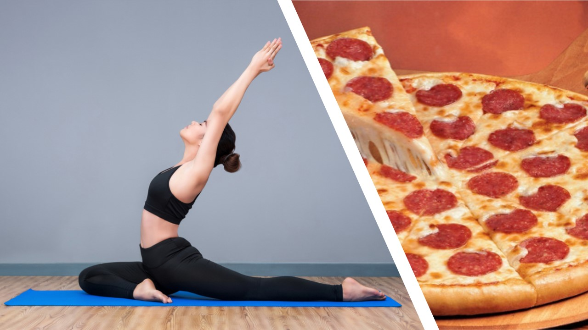
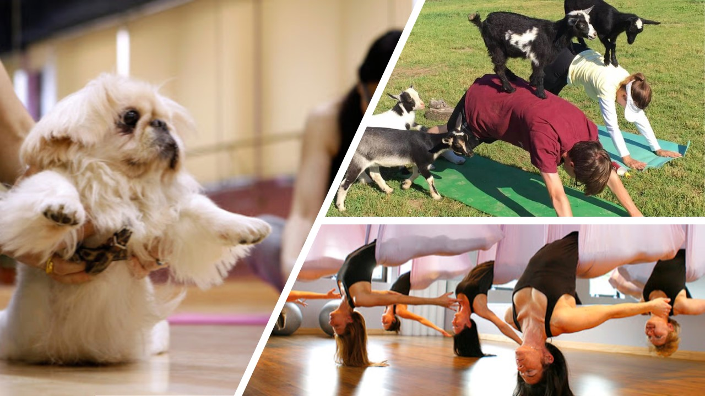

Jooga – kehonrakennusta vai meditaatiota?
(Gsa Gottschalk)

Jooga tuntuu tarjoavan vastauksen elämän kaikkiin kysymyksiin. Joogaa tutkinut Mark Singleton kertoo, miksi näin on. Jutun hieno valokuva on eri puolilla maailmaa joogaa kuvanneen Andy Richterin käsialaa.
Mark Singleton työskentelee University of Londonissa tutkien hathajoogan historiaa. Hän on kiinnostunut erityisesti perinteiden ja modernin kohtaamisesta joogassa. Häntä haastateltiin juttua varten Lontoossa.
Miksi joogaa voi verrata pizzaan?
Pizza on tehnyt pitkän matkan Napolista New Yorkiin ja takaisin. Samaan tapaan jooga on matkannut kauas kotimaastaan, omaksunut erilaisia vaikutteita ja palannut uusine ainesosineen takaisin Intiaan. Siksi moderni jooga voi poiketa huomattavasti perinteisestä joogasta.
Mitä tarkoitetaan perinteisellä joogalla?
Käsitteellä ”jooga” tarkoitettiin alun alkaen meditaatiota. Niin sanottu hathajooga alkoi kehittyä 1000-luvulla, ja siinä yhdistetään hengitystekniikkaa ja meditaatiota tiettyihin asentoihin eli asanoihin. Hathasta tuli 1500-luvun jälkeen suosituin joogamuoto Intiassa.
Kokoonnuttiinko jo tuolloin yhteiseen aurinkotervehdykseen?
Aurinkotervedys ei ole perinteisesti kuulunut hathajoogaan, se on moderni muunnelma. Alun perin hathajooga oli yksi askeesin muoto: sen harjoittajat hyvästelivät perheensä ja eristäytyivät maailmasta. Siirtomaaajan Intiassa tähän joogamuotoon suhtauduttiinkin kriittisesti. Sen harjoittajia pidettiin usein vaarallisina ja epäilyttävinä-ylipäätään liian vähän sivistyneinä modernia Intiaa varten.
Milloin tämä näkemys muuttui?
1900-luvun alussa. Euroopassa alettiin tuolloin toden teolla kiinnostua fyysisestä harjoittelusta, eräänlaisesta kehonrakennuksesta. Voimistelusta tuli kansanliike. Yksilön katsottiin olevan valtio pienoiskoossa, ja vahva valtio tarvitsi voimakkaita yksilöitä. Tämä ajattelutapa ja harjoitteet levisivät ympäri maailman, ja ne sekoittuivat paikallisiin tapoihin. Esimerkiksi Kiinassa kamppailuurheilulajeista tuli suosittuja, ja Intiassa nämä ajatukset vaikuttivat joogaan.
Kehittyikö moderni jooga siis eurooppalaisten vaikutteiden pohjalta?
Ei, itse jooga ei muuttunut, ainoastaan ajattelutapa, jonka ihmiset liittivät joogaan. Intiassa oli yhtäkkiä ”kehonrakentajajoogeja” eikä hathajoogaa enää pidetty askeesina.
Milloin eurooppalaiset alkoivat kiinnostua joogasta?
Vuonna 1917 Mumbaissa avattiin ensimmäinen tieteellinen joogainstituutti. Sen perustaja Shri Yogendra matkusti muutamia vuosia myöhemmin Yhdysvaltoihin ja oleili siellä ennen palaamistaan Intiaan. Hän tulkitsi hathajoogaa uudella tavalla: harjoituksiksi, jotka tunnettiin jo lännessä ja jotka tekivät kehosta voimakkaan ja terveen.

Hän siis puhui kieltä, jota eurooppalaiset ja amerikkalaiset ymmärsivät?
Juuri näin. Hän hallitsi erinomaisesti aikakauden tieteellisen ja lääketieteellisen kielen, luki tärkeät aikakauslehdet ja lähitieteenalojen edelläkävijöiden kirjoitukset. Näitä tieteenaloja ovat fysiologia ja anatomia sekä liikunta ja lääketiede. Hän torjui hathajoogan askeettisen perinteen ja tarkasteli sitä kansanterveyden näkökulmasta.
Miten Shri Yogendra sai ihmiset joogaamaan?
Valokuvista oli paljon apua. Vanhoista sanskriitinkielisistä teksteistä ei useinkaan saa selvää, missä asennossa kehon pitäisi tarkalleen olla. Ohje saattaa kuulua vaikka näin: ”Asetu makaamaan kasvot alaspäin. Kosketa varpailla lattiaa varpaat alas suunnattuina, aseta kämmenet päälaelle, nosta takapuolta ja kiinnitä katse napaan. Tuo nenä lattiaan ja nosta se korkealle käsien tasolle. Se on elefanttiasento.”
Miksi jooga on suosittua?
Jooga on nykyään monille tärkein henkinen harjoitus. Se muuttuu aina siksi, mitä ihmiset juuri sillä hetkellä tarvitsevat. Nykyajan ihmiset tarvitsevat keinon stressinhallintaan ja he haluavat olla yhteydessä johonkin aitoon ja syvälliseen. Jooga tyydyttää henkisen kaipuun aikana, jolloin monikaan ei enää usko järjestäytyneeseen uskontoon.
Joogan juuret ovat kiinteästi hindulaisuudessa. Voidaanko niitä erottaa toisistaan?
Hindulaisuus on kiistatta joogan kehto. Mutta jo kauan ennen 1900-lukua myös muiden uskonsuuntausten jäsenet harjoittivat joogaa. Joogien varhaisin maininta eräässä hindueepoksessa ei edes liity hinduihin vaan buddhalaisiin. Myös islamissa on hyvin mielenkiintoinen suuntaus, jonka tekstejä levisi Turkkiin asti. Tämä suufilaisuus ja jooga vaikuttivat toisiinsa vastavuoroisesti. Voi siis sanoa, että käsitys, jonka mukaan jooga kuuluisi johonkin tiettyyn uskontoon, on historiallisesta näkökulmasta väärä. Hathajoogaa ovat aina voineet harjoittaa kaikki.
Onko tämä joustavuus osa joogan vetovoimaa?
Kyllä, se on tehnyt joogasta houkuttelevan jo esimodernilla ajalla. Monista varhaisista hathateksteistä on jätetty tietoisesti pois mantrat ja uskonnolliset rukoukset, jotka olisivat paljastaneet heti niiden laatijan ja sen, onko hän esimerkiksi Vishnun tai Shivan kannattaja.
Onko olemassa oikeaa tapaa harjoittaa joogaa?
Eri tapoja joogata on ollut aina näihin päiviin asti. Ajatus siitä, että eri asanoissa kädet ja jalat on aseteltava tarkasti ja että asanat tulisi tehdä oikeaoppisesti, perustuu ennen kaikkea joogaopettaja B. K. S. Iyengarin menetelmiin. Hänen vuonna 1966 kirjoittamansa Light on Yoga on yksi 1900luvun tärkeimmistä ja suosituimmista joogakirjoista. Joogassa on kuitenkin myös koulukuntia, joiden mukaan asanoihin ei pidä tuhlata liikaa aikaa. Syykin kerrotaan: joogassa kyse ei ole venyttelyharjoituksista.
Miksi monille on niin tärkeää, että aurinkotervehdys tehdään oikeaoppisesti?
Maailmassa, joka muuttuu jatkuvasti ja jossa moni ei enää saa turvaa uskonnosta eikä hengellisyydestä, kaivataan aitoja ja todellisia asioita, jotka eivät ole kaupan. Asioita, jotka eivät muutu.
Voiko jooga täyttää tämän kaipuun?
Meidän on erotettava toisistaan kaipuu henkiseen totuuteen, jonka olemassaolosta ei ole varmuutta, ja toisaalta kaipuu siihen, että jokin asia olisi aina ollut tietyllä tavalla. Nämä sekoitetaan usein keskenään, ja siksi joogan toivotaan olevan historiallisesti muuttumaton. Historioitsijana minun on torjuttava tämä näkemys.
Muuttuuko jooga siis jatkuvasti?
Ehdottomasti. Se muuttuu edelleen mutta paljon nopeammin kuin aikoinaan Intiassa ja selvästi erikoisempaan suuntaan. Kun tutkii pitkään sanskritiinkielisiä tekstejä ja sitten katsoo, mitä kaikkea joogan nimissä tarjotaan, hämmästyy. On koirajoogaa. Ja vuohijoogaa! Kulttuurihistorioitsijana hyväksyn kuitenkin joogaksi kaiken, mitä joogaksi kutsutaan. Vain siten voin ymmärtää, mitä tapahtuu.
Juttu on julkaistu kokonaisuudessaan GEO-lehdessä 3/2019.